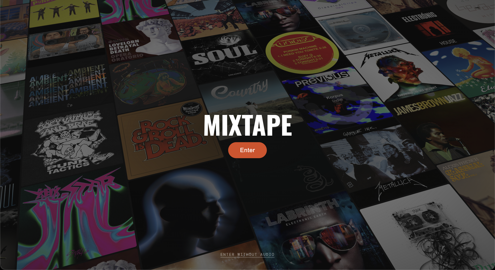
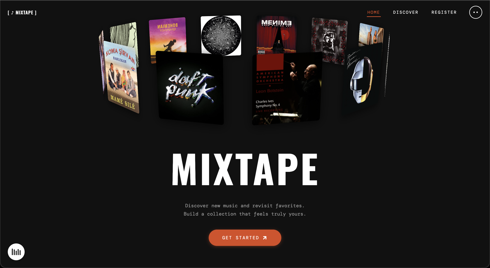
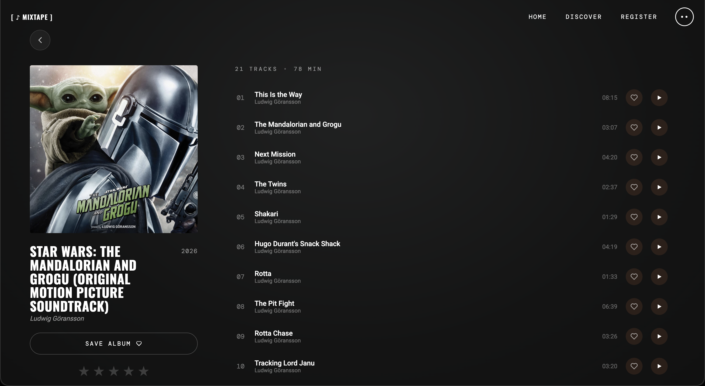
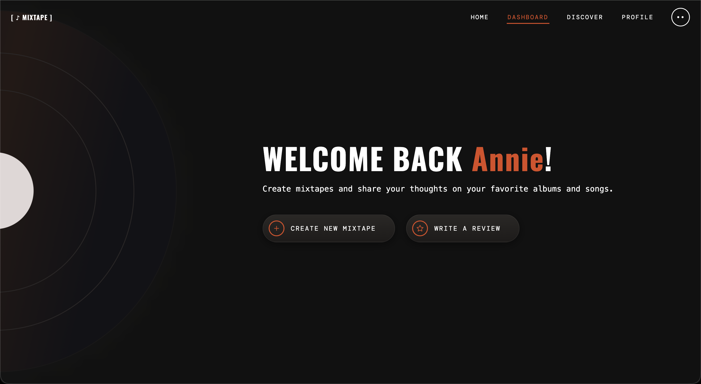

March 2026 - April 2026 (2 Weeks)
Github Website: https://iat459-project.vercel.app/
Mixtape is a full-stack music catalog and playlist web app designed to bring back the personal feeling of handmade cassette tapes. The site focuses on giving listeners a space to curate their own collections, rate albums, and share what they're into, all wrapped in a dark, music-first interface accented with a copper-orange palette. The goal was to design a music platform that feels personal and expressive rather than algorithm-driven, while staying easy to navigate across both desktop and mobile.

The interface was designed in Figma and built using React, with a Node.js and Express backend connected to MongoDB. Live track and album data is sourced from the Deezer API. The visual direction centered on a dark theme, Oswald display typography, and soft motion accents — including a spinning vinyl, 3D album carousel, and a real-time Web Audio API equalizer. Reusable components like album cards, review cards, and the mixtape editor were built to keep the design consistent while supporting features such as authentication, reviews, public discovery, and an admin panel.

One challenge was balancing visual richness with performance, especially on mobile. Scroll-driven animations and sticky scenes behaved well on desktop but required careful tuning for iOS Safari, including viewport-math caching, GPU compositing hints, and input adjustments to prevent auto-zoom. Another challenge was structuring the backend cleanly — designing endpoints and data models that could support mixtapes, reviews, favorites, and user profiles without becoming tangled as the feature set grew.

The final Mixtape app delivers a cohesive, expressive music experience that feels personal and intentional. The project strengthened my skills in full-stack development, responsive UI design, and debugging real-world cross-browser issues. The result is a platform that clearly communicates its brand personality while remaining functional, fast, and enjoyable to use on any device.

Let's collaborate on creating unique designs and functional websites. Reach out to discuss how I can contribute to your team and help bring your ideas to life.
Let's Connect